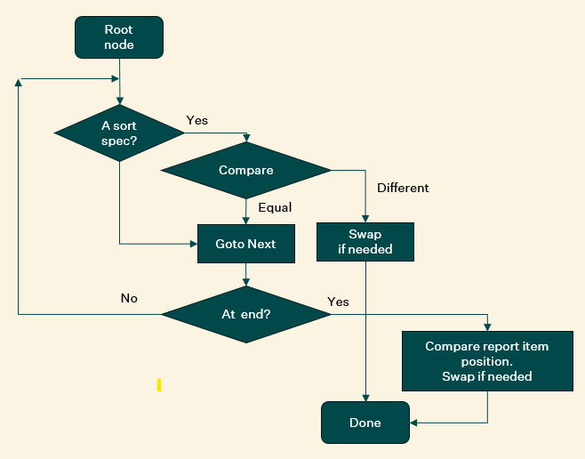
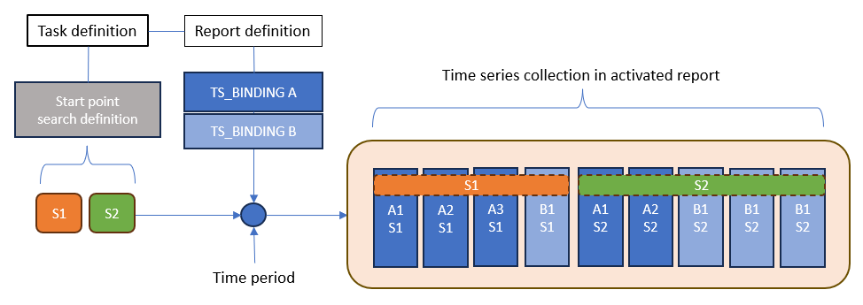
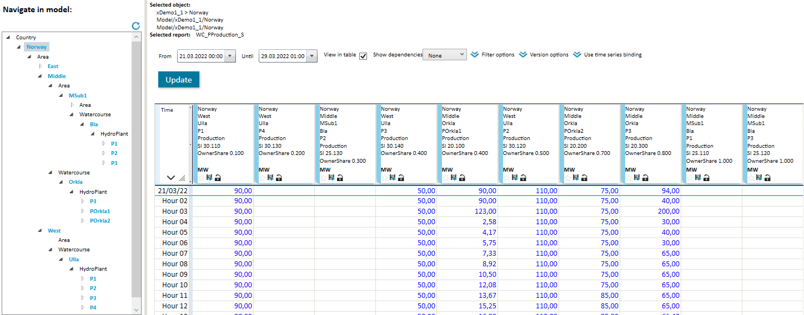
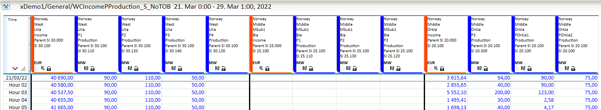
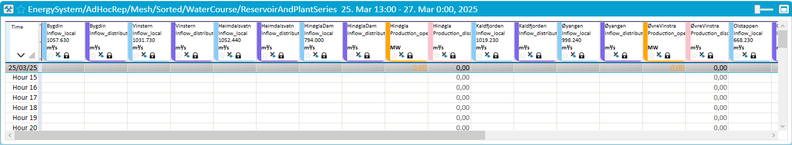

Layout of template time series reports
Shortcuts
If you know the basics and just want to check some details, here are some fast track shortcuts:
- I want to sort the results from a single
TS_BINDINGquery.
Use the TEMPLATE_ORDER_BY column attribute. Here is the syntax. This approach has a Local scope.
Note! The syntax is now harmonised with general sorting syntax.
- I want to sort the start points before activating a report.
Append ORDER_BY:<sort definition> to the start point search definition as described here.
Note! The ORDER_BY: keyword must be added immediately after the search definition (no comma, no space, nothing).
- I want to apply a global ordering on the complete set of time series found in a report.
Then you should add a section to the Mesh start point definition like this ;ORDER_BY_CONFIG:<sort definition>, see more details here.
As this is a standalone section it must be separated by the start point search definitions using the semicolon separator. It is the same sort definition format as used above. Be aware that a global sort definition will discard any other order-by setup provided (Local or start point) - The value next to this keyword may be an in-place definition or it may be a reference to a Mesh resource "file", see here for how to create/maintain such definitions.
- I have a default sort definition but do not want to use it on the current report.
Then you should add a section to the Mesh start point definition like this ;ORDER_BY_CONFIG:None.sort
Note! Sections are separated with semicolon.
General introduction
About Mesh model definition and models.
About Mesh template time series reports.
The template based approach provided by Mesh is based on a high level report definition that expands to real contents by use of queries into the Mesh model. That means the same report definition can be applied to different areas of the Mesh model and thereby provide different contents.
This expandable and reusable report definition gives a lot of advantages but also less direct control over the layout, that is the order of the appearance typically visible in a table view. To compensate for this, the Mesh report definition and report activation provide different order-by alternatives.
Time series report layout
In previous sections we have briefly described the process of activating a report definition at one or more start-points in a Mesh model. That process is about collecting time series to be part of the activated report. In this section we will discuss how this collection of time series is ordered and "decorated" when presented out of the box.
There are two main layout specifications:
- The order of appearance in a tabular view layout
- Originally, before Mesh, this was controlled by the order of column definitions in the report definition
- The dynamic behavior of Mesh template reports makes order-by features important
- Legends, headers, colors, pages, groups ++
- A lot of these attributes have to use macros that makes it possible to adapt to the properties of current object
- Without macros all the attributes that originates from the same report column definition would be equal
The order-by features supported by Mesh template reports
There are three levels where you can configure this:
- Local
- Applied to results from a single TS_BINDING request
- Start point
- Control the order of start points applied to build the report instance
- Global
- Apply a full sort operation when all series are collected
The Global approach override the other two definitions. Start point ordering and Local ordering can work together.
Evaluating the order-by criterion
The sorting algorithm that is used in Mesh evaluates a potential criterion value for each hierarchical level of the object path, starting from top level which is the model components. (A component is a Mesh object owned directly by the Mesh model). If the criterion value is equal for the compared objects, then move on to next hierarchical level and do the same type of operation.
The basic algorithm can be illustrated like this:

This flow shows the main process. There is some special handling when the hierarchical paths have different depth and the two objects to compare have different type.
If the objects to compare have different type this logic is applied:
- If the sort definitions involved are compatible - proceed as normal. Example: Both types have
Topologyas definition - If not compatible, try to find equal types further down the object path
Mesh object path
As we understand from the flow chart above, each object in Mesh have a unique path.
In a template report definition the contents refer to Mesh model objects, more precise to time series attributes or time series collection attributes.
Each part of the object path below the model name may have an order-by specification attached. Such specifications are linked to objects through their object type.
The order-by specification provide details on how to find the criterion value associated with a concrete instance.
The order-by specification format
The following format is used to configure how the sorting should be done:
TypeName=Sortdef[,TypeName=Sortdef ...]- Sortdef is:
AValidSearchDef[:D][;AValidSearchDef[:D] ...]- There may be several search definitions in prioritized order. First definition that find a valid criterion value is used.
- A trailing
:Dmeans descending sort operation
To be used in criterion value comparison the search specification must end up at an attribute having one of these types:
- Integer - a fixed number
- Double - a decimal number
- String - a set of characters
- Node - in this case it is internally mapped to a String that contains the name of the node
In addition, it is possible to use the following predefined keywords as an alternative to providing a search definition. These are available:
Name- use the name of the object as criterion valueIndex- use the position of report column definition from where this object originates (which TS_BINDING is coming from)Topology- applicable for objects part ofEnergySystemwatercourse and associated case structure. The system dynamically attach increasing numbers from top to bottom in a watercourse and uses that as criterion value.Ignore- do not apply any comparison
In addition to a valid TypeName it is possible to use a generic type name Default which then hold a definition for all types are not explicitly mentioned in the order-by definition.
Examples:
Default=Ignore,Reservoir=.HRWL:D
- Sort objects by the descending HRWL attribute value (Highest Regulated Water Level) found on instances of type Reservoir
- For all other types - do no comparison
Default=Ignore,WaterCourse=Name,cWaterCourse=Name,Reservoir=.HRWL,cReservoir=to_Reservoir.HRWL
- Same as a above, but group according to watercourse name and use ascending order
- Included specification for case objects
- For cReservoir objects - go to linked asset object (to_Reservoir) and use HRWL
Note! For the TEMPLATE_ORDER_BY definition it was possible to have a simplified format like .HRWL or even HRWL which the sort algorithm would take
as a definition implicitly connected to the type owning the time series attribute.
This is no longer supported. (from 2025.3)
Multiple scopes of order-by definition
As mentioned earlier there are three levels where an order-by definition is applicable.
Local
At this level we use the report column definition attribute TEMPLATE_ORDER_BY.
The definition is used to sort the time series attributes found from applying the search
operation defined by the TS_BINDING. The sorted list is added to collection of time series for activated report.
Example:
TS_BINDING *[.Type=Reservoir].ReservoirLevel_operative
TEMPLATE_ORDER_BY Default=Ignore,Reservoir=.HRWL:D
Start points
An activated report that is visible to the user always needs one or more starting points. See more about the activation process here
The activation process can be described by the following pseudo code:
for each startPoint in startPoints
for each columnDefinition in columnDefinitions
tslist = apply search based on TS_BINDING from startPoint
if there is an order-by definition then apply sort operation to tslist
add tslist (sorted or not sorted) to activated report contents
The scope now is related to sort the list of start-points.
Example of a start point definition:
*[.Type=WaterCourse]ORDER_BY:Area=Name,WaterCourse=.SortIndex
This definition means:
- Find start points by looking for watercourse objects in the current Mesh model. Current model is configured at task level.
- Sort them according to an attribute called
SortIndexassumed to be available on instances of the WaterCourse type and group them according to area name.
There may be several start point search sections separated with semicolon ;. Observe that the eventual order-by section (starting with ORDER_BY:) is defined
immediately after the search definition. This is because it belongs to that specific search expression. The next search section will have its own order-by definition.
Example of multiple start point definitions:
*[.Type=WaterCourse]ORDER_BY:Area=Name,WaterCourse=.SortIndex;*[.Type=SomeType]ORDER_BY:Default=Ignore,HydroPlant=.SortIndex
As described above, the parsing of the start-point definition is rather strict.
Global
If there is a global scope order-by definition in place, then it will override the definitions described above (Local and Start point). In this mode all time series that are collected to be part of the activated report are sorted according to the global definition.
Global definitions are stored in the Mesh resources section. See details on how to create/edit/delete such definitions.
To associate a report activation with a global sorting definition there are currently three options:
-
Add
ORDER_BY_CONFIG:<path to text file resource>to the end of start point definition. If there is a search definition in place you have to add a;in front of this section. See examples below. -
Add a default order-by definition to a predefined location in the Mesh resources:
Resource/ConfigFiles/OrderBy/Default.sort -
Add order-by definition as described above immediately after the
ORDER_BY_CONFIG:keyword
The format of the global sort specification is the same as already described. When resource "files" are used it normally contains multiple lines, one line per type. Like this:
File MySort.sort
Default=Ignore
cReservoir=to_Reservoir.HRWL:D
Reservoir=.HRWL:D
These two definitions are equivalent:
start-point definition;ORDER_BY_CONFIG:Resource/ConfigFiles/OrderBy/MySort.sortstart-point definition;ORDER_BY_CONFIG:Default=Ignore,cReservoir=to_Reservoir.HRWL:D,Reservoir=.HRWL:D
To utilise the special definition Default.sort may be convenient but due the its global scope it can have undesired side effects.
It might be used in places you did not want it to. To avoid such interference from a "hidden" default you can add a
global order-by definition that explicitly say: do not apply a global sort operation. It is done by referring to a resource called
None.sort. The system just look at the name and it does not try to look it up, hence it does not need to exist. See example below.
Some examples of start point definitions
Examples:
-
*[.Type=HydroPlant];ORDER_BY_CONFIG:Resource/ConfigFiles/OrderBy/MySort.sort
Apply global sort definitions found onMySort.sortfile. Those types not explicitly mentioned in that definition will use ascending Name as criteria. -
*[.Type=HydroPlant]ORDER_BY:HydroPlant=.OwnerShare;ORDER_BY_CONFIG:None.sort
Order starting point list according to ascending value on OwnerShare attribute on HydroPlant. The reference toNone.sortwill ensure that a potential default global sort will not override the ORDER_BY settings specified here -
*[.Type=HydroPlant]ORDER_BY:HydroPlant=.OwnerShare:D,WaterCourse=.SomeAttribute
Sort starting point list according to descending value of OwnerShare attribute. WaterCourse items are sorted according to ascending value of SomeAttribute.
Note! These definitions will be ignored if there is a fileResource/ConfigFiles/OrderBy/Default.sortinstalled
Best practice
It's hard to say what's the preferred method to setup a proper order-by definition. It depends on the type of report at hand. In this section some hints and considerations are discussed.
The implications of report activation process
When you choose an order-by method it is important to understand the report activation process and therefore, some details about that are described here.

The illustration above shows the following:
Context
- There is a task definition
- it refers to a report definition
- it refers to a start point definition
- The search for start point found two Mesh objects S1 and S2
- The report contains two column definitions, query A and B
Apply report definition for start point S1
- When query A was applied to start point S1 it found time series attribute A1, A2 and A3
- Add these three time series to the report collection
- When query B was applied to start point S1 it found time series attribute B1
- Add this time series to the report collection
Apply report definition for start point S2
- When query A was applied to start point S2 it found time series attribute A1 and A2
- Add these time series to the report collection
- When query B was applied to start point S2 it found time series attribute B1, B2 and B3
- Add these time series to the report collection
If there are TEMPLATE_ORDER_BY definitions on column definitions, the result from query will be sorted according to this before adding it to collection.
If there are ORDER_BY: at end of start point search definitions, then the result from start point search operation will be sorted according to this.
Simple reports
A simple report is for instance a report based on a definition having one column definition.
In such cases use of TEMPLATE_ORDER_BY will do.
Cluster reports
In this group we have report definitions that refer to several time series relative to a dedicated Mesh object type. Most often it will be bound to that type and normally have several report column definitions (multiple TS_BINDING definitions). It may reach out to several time series attributes on that type as well as other time series attributes found relative to this type (up/down or through links).
In such cases use of ORDER_BY on start point definitions most likely are the best choice. It can also be combined with TEMPLATE_ORDER_BY on queries that may return multiple time series.
Complex reports
It's hard to pinpoint exactly what a complex report definition is. One criterion may be that it refers to time series bound to several hierarchical levels. Another is that it contains many column definitions that address time series on different object types.
The use of global sort definition may be considered in these cases.
Some general remarks
To summarize:
-
Which order-by method to use depends on the characteristics of the report definition
-
Sort operations on Mesh objects with different depth may be challenging
-
Sort definition using keyword
Topologyis a specialized method that can be used on types in the Watercourse family as defined in Volue's definitionEnergySystem. It sort objects from top to bottom, i.e. from highestReservoirorCreekand downwards. -
If sort definition cannot decide between two objects
- it will try to use default method
- if one or both objects end up at time series object it will use the
Indexmethod to decide
Maintain a global sorting definition
A sort definition is given a name and placed into the Mesh resource section. This usage can be compared to a file stored in a hierarchical file system. The tool Powel.Mesh.CommandlineRequests.exe can be used to import, export and list available sorting definitions. The commands to do that are (clr is used as an alias):
-
Import:
clr -i Default.sort -w ImportTextFile -w Resource/ConfigFiles/OrderBy/Default.sort -S -
Export:
clr -o Default.sort -w ExportTextFile -w Resource/ConfigFiles/OrderBy/Default.sort clr -w ExportTextFile -w Resource/ConfigFiles/OrderBy/Default.sort clr -w ExportTextFile -w Resource/ConfigFiles/OrderBy/Default.sort -w deleteFirst is export to file, second to standard output (terminal) and last is export to file and deleteResourcedefinition. -
List available items:
clr -w ListTextFiles -w Resource/ConfigFiles/OrderBy clr -w ListTextFiles -w Resource/ConfigFiles/OrderBy -w sortFirst list all types, second list all with suffix sort
Some examples using order-by in template reports
Local scope order-by
This is the report definition:
MESH_SESSION_TS "ON"
OBJECT_TYPE 21
MESH_GUID "85e6f7a9-c82d-452f-a32c-9ca9399ab4f6"
DBI_COLUMN
TS_BINDING "*[.Type=HydroPlant].Production"
COLOR_HEAD "Sky Blue"
NAME "PlantProduction"
GRAPHTEXT "$FullObjName $AttrName"
TEXT "$FullObjName#$AttrName#SI $<$.SortIndex>#OwnerShare $<OwnerShare>"
TEMPLATE_ORDER_BY "Default=Ignore,HydroPlant=.OwnerShare"
END_COLUMN
Some comments:
- Searches for all
Productionseries on allHydroPlanttype objects below a watercourse. - Do a local order-by ascending sort using the local attribute value
OwnerShare - The column heading (
TEXTattribute) refers to local attributes forSortIndexandOwnerShare. The format$<$.SortIndex>is the general format where the inner part is a general search expression. The format$<OwnerShare>is simpler form when referring to local attributes (attributes on the object owning this time series).

Task setup using start point ordering
This is the report definition:
MESH_SESSION_TS "ON"
OBJECT_TYPE 21
MESH_GUID "85e6f7a9-c82d-452f-a32c-9ca9399ab4f6"
DBI_COLUMN
GRAPHTEXT "$ObjName $AttrName"
TS_BINDING "*[.Type=Watercourse].Income"
TEXT "$FullObjName#$AttrName#Parent SI $<$...SortIndex>#SI $<$.SortIndex>"
BORDERS "Left"
COLOR_HEAD "Orange Red"
NAME "WCIncome"
END_COLUMN
DBI_COLUMN
GRAPHTEXT "$ObjName $AttrName"
TS_BINDING "*[.Type=HydroPlant].Production"
TEXT "$FullObjName#$AttrName#Parent SI $<$...SortIndex>#SI $<$.SortIndex>"
COLOR_HEAD "Blue"
NAME "PlantProduction"
END_COLUMN
Start point definition (inside task definition):
*[.Type=Watercourse]ORDER_BY:Default=Ignore,Watercourse=.SortIndex:D
This means activate the report definition for all Watercourse objects found in this Mesh model. The order of the objects are given by descending SortIndex found on the Watercourse objects.
The result of this report activation in Nimbus looks like this:

Global sorting using topology
This is the report definition:
OBJECT_TYPE 21
MESH_GUID "c36b3004-3f89-4f60-a473-a80c83f13f23"
DBI_COLUMN
GRAPHTEXT "$ObjName $AttrName"
TS_BINDING "*[.Type=Reservoir].Inflow_local"
COLOR_HEAD "Light Sky Blue"
TEXT "$ObjName#$AttrName#$<HRWL>"
NAME "Inflow_local"
END_COLUMN
DBI_COLUMN
TEXT "$ObjName#$AttrName"
GRAPHTEXT "$ObjName $AttrName"
TS_BINDING "*[.Type=Reservoir].Inflow_distributed"
COLOR_HEAD "Medium Slate Blue"
NAME "Inflow_distributed"
END_COLUMN
DBI_COLUMN
TEXT "$ObjName#$AttrName"
GRAPHTEXT "$ObjName $AttrName"
TS_BINDING "*[.Type=HydroPlant].Production_operative"
COLOR_HEAD "Orange"
NAME "Production_operative"
END_COLUMN
DBI_COLUMN
TEXT "$ObjName#$AttrName"
TS_BINDING "*[.Type=HydroPlant].Production_discharge"
COLOR_HEAD "Pink"
NAME "Production_discharge"
END_COLUMN
The report is bound to Mesh object type named WaterCourse.
The task definition have this start point definition (Nimbus Configurator):
*[.Type=WaterCourse&&.Name#L.gen];ORDER_BY_CONFIG:Default=Ignore,HydroPlant=Topology,Reservoir=Topology
PS! The global order-by specification is here added directly in the Nimbus task definition. It is also possible to add this definition to a resource "file" and refer that file with full path into Mesh resource section.
The associated table presentation looks like this:

Some comments to the visible layout:
- The sort definition
Topologyorder time series from top highest reservoir in this watercourse - Time series coming from the same object will be ordered according to position within report definition
- Therefore
Inflow_localis located beforeInflow_distributed - After some reservoir series there are some contribution from hydro plant object, then from some downstream reservoirs etc.